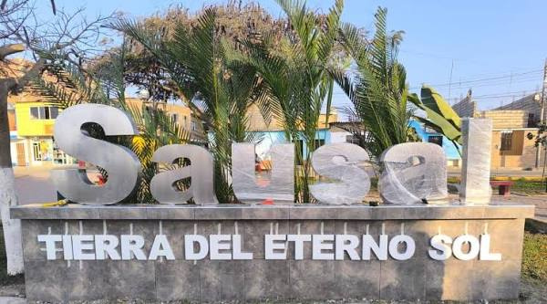

Pollería Bendición de Dios
Negocio dedicado a la venta de comidas y pollo a la brasa.
Descubre, conecta y valora Sausal.
Un espacio digital para conocer lugares, negocios, servicios, instituciones, actividades, costumbres, tradiciones e historia de nuestra comunidad.

IDENTIDAD LOCAL
Sausal es un centro poblado perteneciente al distrito de Chicama, provincia de Ascope, región La Libertad.
La comunidad mantiene una relación importante con la agricultura, el comercio y diferentes actividades productivas. La información institucional de la I.E. José Carlos Mariátegui también destaca las costumbres y festividades religiosas que forman parte de la identidad local.
Una fuente académica sobre la historia local recoge referencias históricas sobre el antiguo Sausal, su relación con las tierras del valle del río Chicama y el desarrollo de la actividad agrícola, especialmente la caña de azúcar.
Las referencias históricas relacionan el desarrollo de Sausal con las tierras agrícolas del valle del Chicama.
La agricultura ha tenido un papel importante en la economía y vida comunitaria de la zona.
Documentación del Congreso señala que Sausal fue reconocido como centro poblado en agosto de 1981.
Actualmente forma parte del distrito de Chicama y mantiene actividades agrícolas, comerciales, educativas, deportivas y culturales.
GUÍA LOCAL
ECONOMÍA LOCAL
Negocio dedicado a la venta de comidas y pollo a la brasa.
Restaurante ubicado en la zona de Sausal.
Restaurante y cevichería de la localidad.
Establecimiento gastronómico ubicado en Sausal.
Negocio identificado públicamente en la zona de Chicama. Su ubicación específica en Sausal debe confirmarse.
CONOCE LA LOCALIDAD
Espacio central de encuentro de la comunidad y referencia para ubicarse dentro de Sausal.
Espacio recreativo utilizado para actividades deportivas y de recreación.
Espacio comercial que forma parte de las actividades económicas y de abastecimiento de la comunidad.
Lugar relacionado con actividades y tradiciones de la comunidad.
EDUCACIÓN
Institución educativa pública de Sausal. Fue creada el 17 de octubre de 1965 para atender a estudiantes de Sausal y anexos.
Institución educativa que aparece vinculada a la búsqueda de servicios educativos de la localidad.
Espacios educativos para la atención de niños en edad inicial.
RECREACIÓN
Espacio recreativo pensado para actividades y entretenimiento infantil.
Espacio público de referencia dentro de la comunidad.
La comunidad cuenta con espacios utilizados para actividades deportivas y recreativas.
IDENTIDAD
La festividad patronal de la Virgen del Rosario forma parte de las principales celebraciones religiosas mencionadas para Sausal.
Es otra de las principales manifestaciones religiosas de la comunidad.
Forma parte de las celebraciones religiosas tradicionales señaladas por fuentes educativas locales.
Las tradiciones locales también registran actividades comunitarias vinculadas a este lugar.
¿NECESITAS AYUDA?
Si no sabes qué lugar visitar o qué negocio buscar, puedes escribirme por WhatsApp. Yo puedo recomendarte una opción de Sausal según lo que estés buscando.
PROYECTO DE EMPRENDIMIENTO
En Sausal existe información dispersa sobre lugares, servicios, negocios, instituciones, actividades, costumbres y atractivos de la comunidad. Esto dificulta que habitantes y visitantes encuentren rápidamente opciones y conozcan mejor la historia e identidad de la localidad.
ProyecLab organiza esta información en un solo sitio web, permitiendo descubrir lugares, conocer su contexto, consultar opciones locales y acceder directamente a Google Maps.
INFORMACIÓN